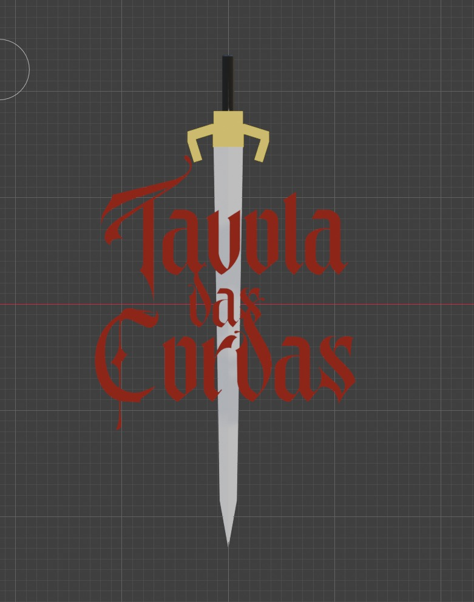
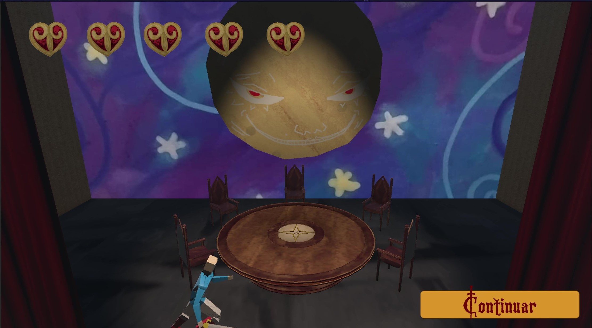

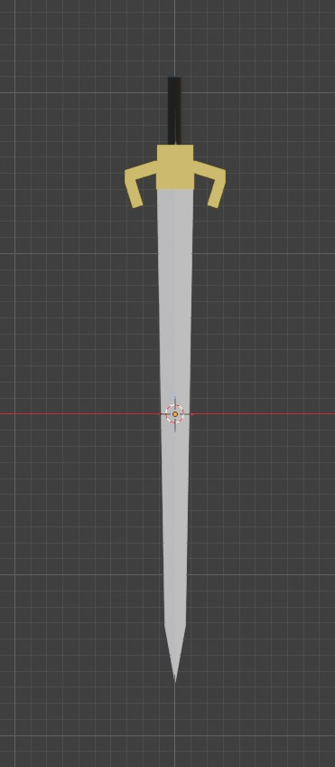
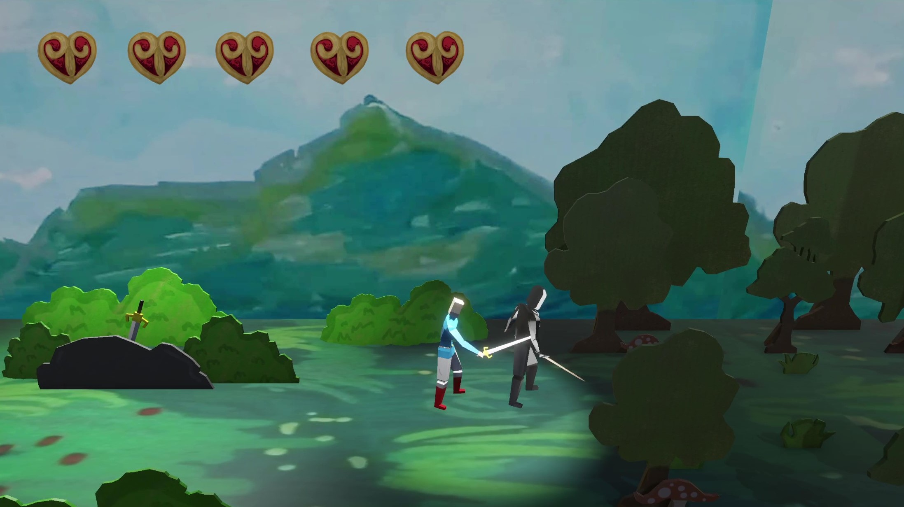

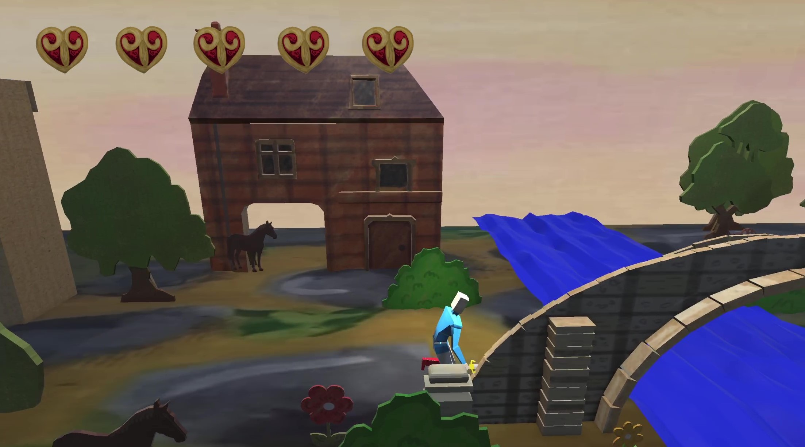
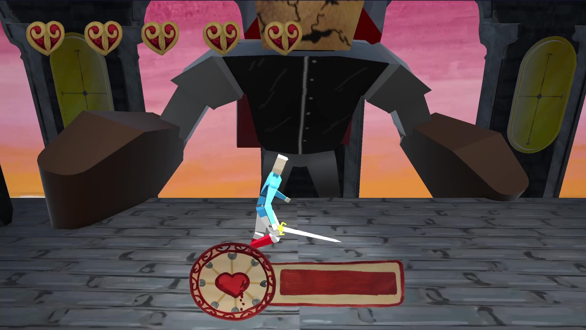






Entre muitas peças de teatro, o boneco que interpreta o Rei Arthur Pendragon acaba na peça de Macbeth. Sem saber que ele é apenas um boneco de madeira, Arthur explora o reino estranho em que se encontra. Ao descobrir que está em um lugar governado por um tirano chamado Thebcam, Arthur teme que sua esposa possa estar em perigo. Determinado a salvar a Dama Macbeth, ele faz uma viagem das florestas ao castelo e tenta convencer Macbeth a aceitar sua ajuda. Durante o caminho, Arthur não deixa de chamar e procurar por Merlim, que sempre costuma ajuda-lo. Eventualmente ele se depara com uma figura que acredita ser Merlim, a lua. Demora um pouco para ele perceber que a lua é na verdade uma entidade ambígua de múltiplas faces, e ainda mais para perceber que as faces não tem boas intenções. Dama Macbeth por sua vez, vê Arthur como um empecilho para seus planos de ser a única regente do país.
Player
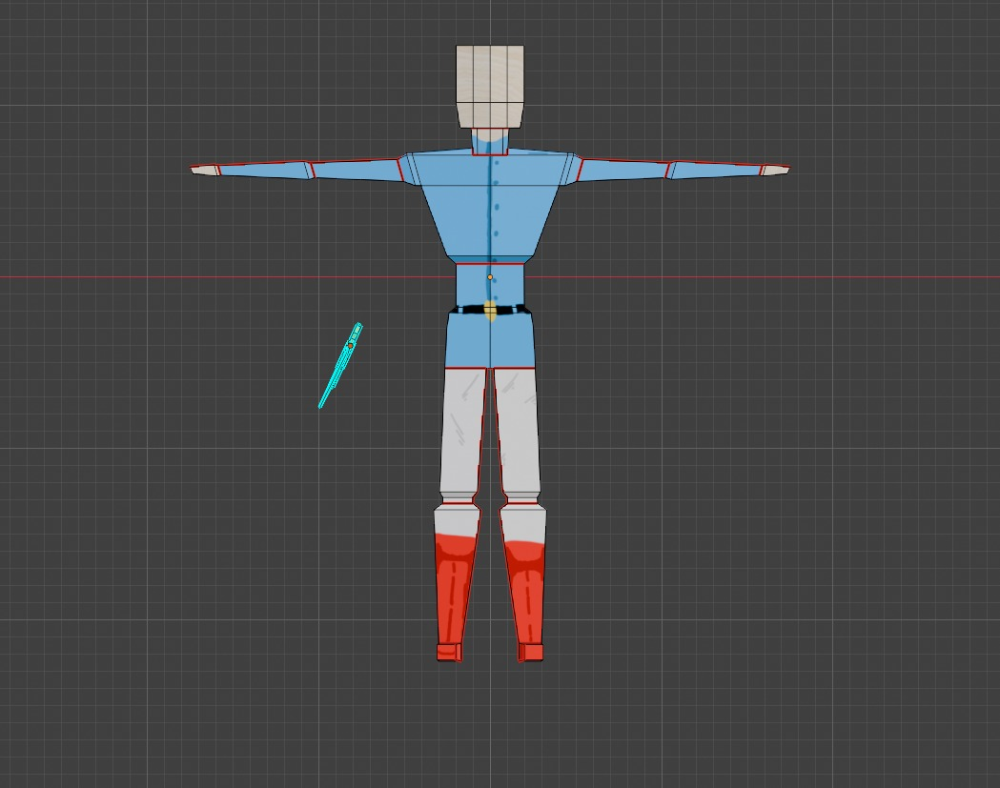
Algo entre aliada e inimiga
Rei Vilão
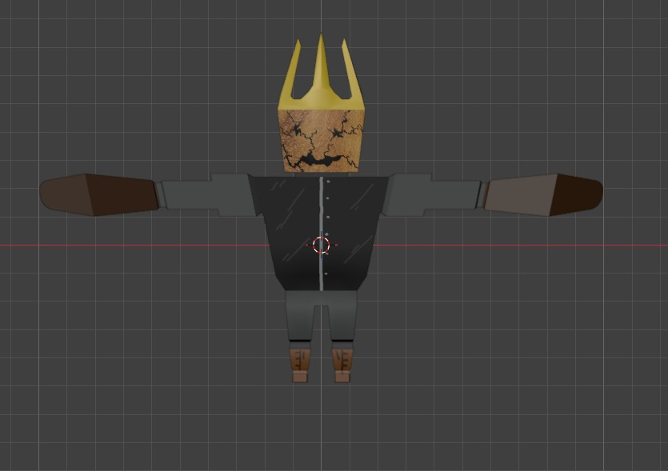
Guardas
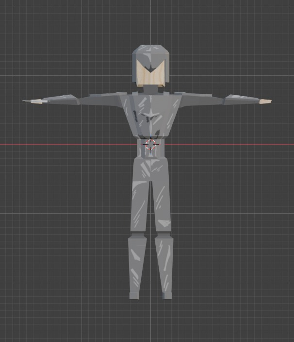
Tecla A para esquerda | Tecla D para direita
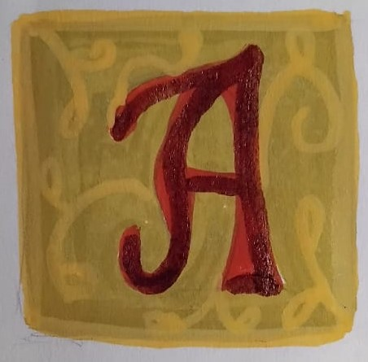
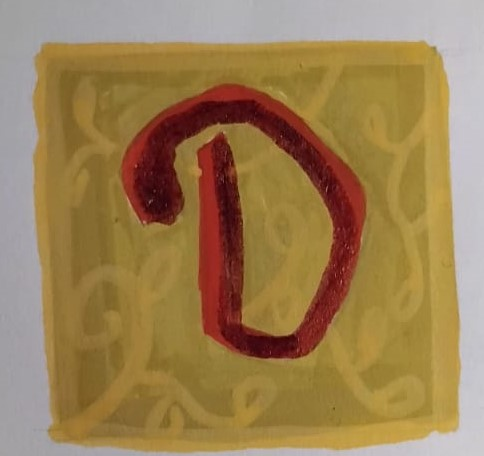
Pular
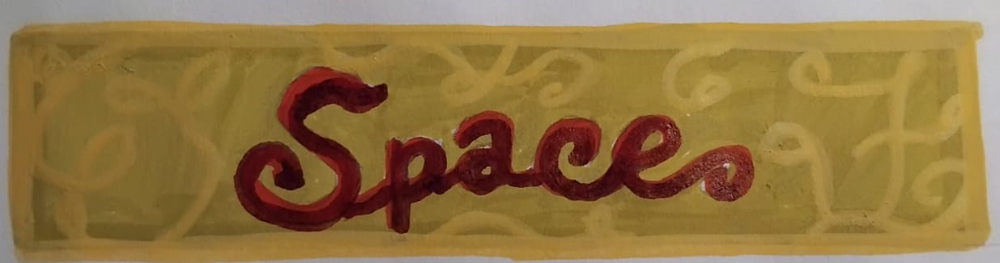
Dash
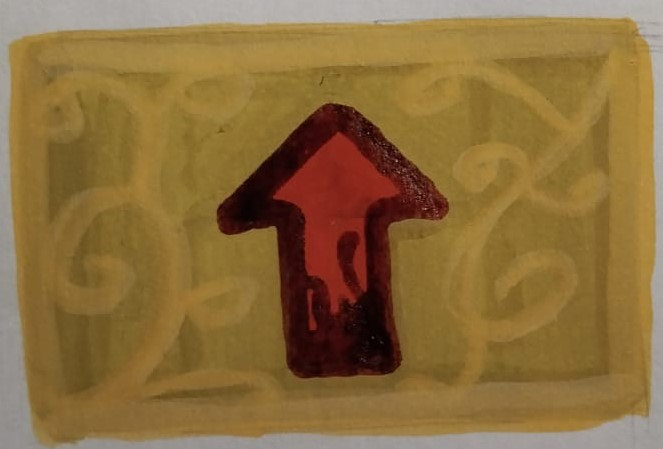
Atacar
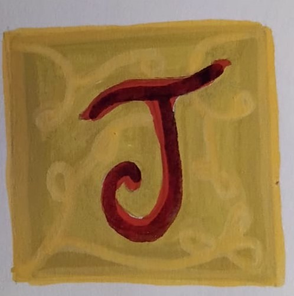